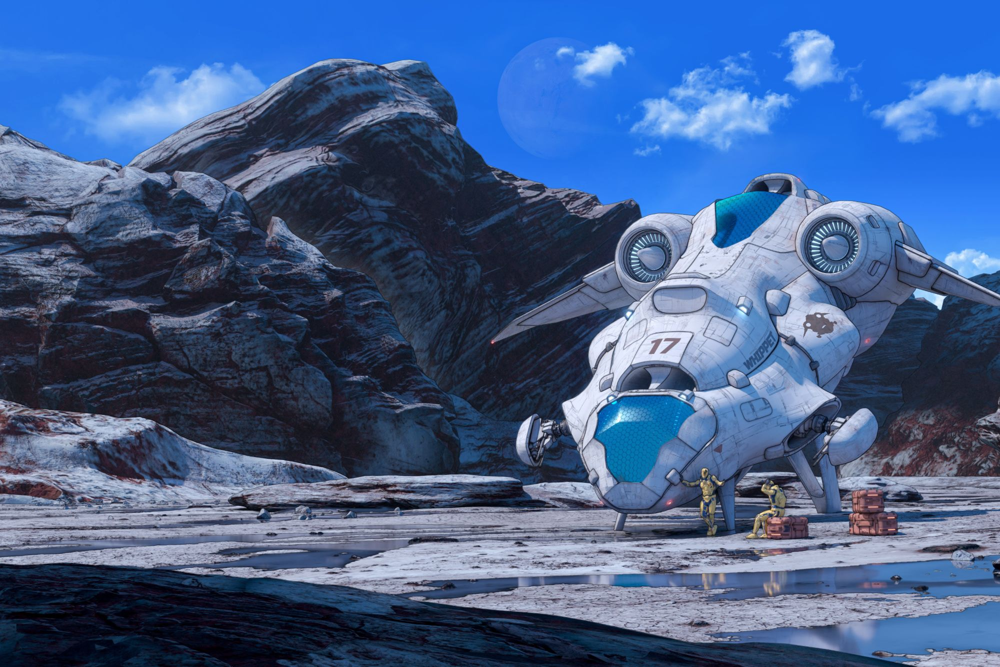

Pointer touches the top edge for 120 ms. Also on Super+B, or when a window needs attention (its workspace pulses).
Hide
600 ms after the pointer leaves. Never while a popover is open or a notification is expanded.
Material
Floating means Glass. Pinned and docked means Mica, because it has become chrome.
Fullscreen
Suppressed. Reveal works with a 300 ms dwell instead.
1 · Hidden

2px reveal edge
Nothing reserved. Windows use the whole screen. The only trace is an invisible 2 px strip along the top edge that wakes the bar.
2 · Revealed
apps1234
21:41Sat 21 Nov
wifivolume_upbattery_5_bar82%
notifications
Floating over the work. Two Glass islands drop in on the default spatial spring. They cover what is under them, and the gap between them leaves your window visible.
3 · Pinned
apps1234
21:41Sat 21 Nov
wifivolume_upbattery_5_bar82%
notifications
Docked. Pin it and the bar becomes a full-width Mica strip, square and edge to edge. Windows start below it. For when you want it always there.
4 · With the window title
apps1234folderFilesniri-shell
21:41Sat 21 Nov
wifivolume_upbattery_5_bar82%
notifications
Where am I. The left island grows to show the focused app and its document, then shrinks again. Long titles fade out at the edge, they never push the clock.
5 · Indicators on the right island
Normal
21:41Sat 21 Nov
wifivolume_upbattery_5_bar82%
notifications
RecordingScreen or camera
fiber_manual_recordRecording 00:42stop
21:41
wifivolume_upbattery_5_bar82%
notifications
Microphone in useBy an app
micMeet
21:41Sat 21 Nov
wifivolume_upbattery_5_bar82%
notifications
Do Not Disturb
21:41Sat 21 Nov
wifivolume_upbattery_5_bar82%
notifications_off
Charging
21:41Sat 21 Nov
wifivolume_upbolt82%
notifications
Battery low
21:41Sat 21 Nov
wifivolume_upbattery_alert14%
notifications
Offline
21:41Sat 21 Nov
wifi_offvolume_upbattery_5_bar82%
notifications
Warm colors mean attention. The status group is blue when all is well, rust when something is off, error red when it is urgent. Recording and microphone get their own chip so they are never missed.
6 · Popovers from the bar
apps1234
more_horiz
21:41Sat 21 Nov
wifivolume_upbattery_5_bar82%
notifications
Chat2 windows
Background apps
cloud_doneBackup
vpn_keyVPN
system_updateUpdates
Hover for a peek, click to open. A workspace pill previews its windows. The ⋯ button holds background apps that would otherwise crowd the bar. Both are Glass, and the bar stays revealed while they are open.